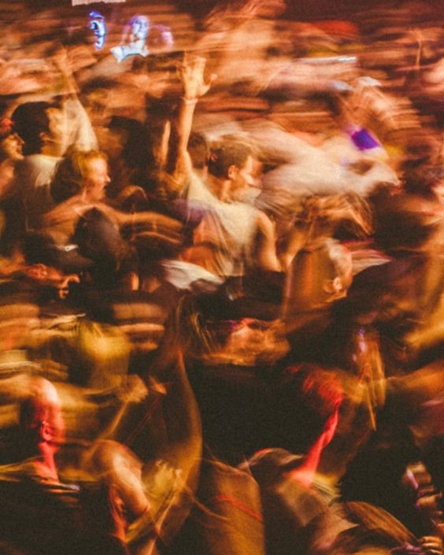

Galeria

Será que, na pressa de alcançar nossos objetivos, não estamos perdendo a oportunidade de apreciar a beleza e as lições encontradas no caminho?
Como é possível que, mesmo cercados por tantas pessoas, ainda nos sintamos sozinhos, como se nossa verdadeira essência permanecesse invisível e incompreendida?

Como podemos realmente viver a vida ao máximo se nunca descobrimos o que significa "o máximo" para nós, uma vez que cada momento oferece novas possibilidades e redefinições de nossos próprios limites e aspirações?
Será que ao dedicar nosso tempo ao que realmente amamos, não estamos, na verdade, encontrando a verdadeira essência da felicidade e dando significado à nossa existência?
Será que aprender a apreciar a própria companhia não é o primeiro passo para encontrar a paz interior e entender que a verdadeira felicidade vem de dentro?
Será que ao nos envolvermos na busca incessante por carros caros e bens materiais, não estamos, na verdade, tentando preencher um vazio interno que apenas experiências e conexões genuínas podem verdadeiramente saciar?
Será que a solidão, muitas vezes temida e evitada, não é também uma oportunidade para nos encontrarmos, nos conhecermos mais profundamente e cultivarmos uma relação mais íntima e verdadeira com nós mesmos?
Será que a diversão vazia que buscamos para preencher nossos dias não é, na verdade, uma tentativa de silenciar os profundos pensamentos da madrugada que nos convidam a refletir sobre o verdadeiro significado de nossas vidas?
Será que os ciclos intermináveis da vida não são um reflexo da nossa própria jornada interior, onde cada fim é um novo começo e cada aprendizado nos prepara para enfrentar o próximo desafio com mais sabedoria?